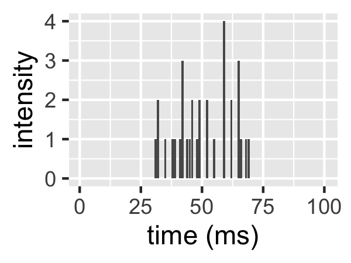
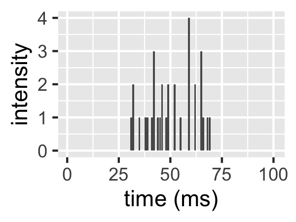

Chapter 1 Introduction
1.1 Confocal light microscopy
All of the images used in my PhD were collected on a confocal microscope. This type of microscope guarantees that only in-focus light is collected at the detector. See figure 1.1.

Figure 1.1: Confocal microscope light path showing how out of focus light does not make it to the detector.1
An image is acquired on a confocal microscope by scanning this apparatus across a sample, collecting one pixel at a time. Some confocal detectors collect intensity in arbitrary units but others are capable of photon-counting. The work in this thesis was carried out with photon-counting detectors.
1.2 Intensity traces
Fluorophores under constant excitation emit light one photon at a time according to a poisson statistics4 with some poisson rate.
Consider figure 1.2. A fluorophore enters the confocal volume, is excited there and emits photons which are collected by the detector. When the fluorophore is not in the confocal volume (start and end), no photons are detected. When the particle is in the confocal volume, photons it emits are collected at the detector. Different numbers of photons are collected per unit time (per ms here).
 

Figure 1.2: Left: a fluorophore diffusing trhough the confocal volume. Right: the intensity trace due to this fluorophore.
1.3 Fluorescence fluctuation spectroscopy
Broadly, fluorescence fluctuation spectroscopy (FFS) is the analysis of the intensity fluctuation of a fluorescence signal (Chen et al. 1999). This very often takes the form of moment analysis5 (Qian and Elson 1990). Briefly, moment analysis is an attempt to extract data from a distribution of values using its moments. The first moment of a distribution is its mean value, the second moment is its variance and so on. Intensity traces can be viewed as distributions with moments. For example, the intensity trace in figure 1.2 has mean 0.27 and variance 0.48.
1.3.1 Number and brightness
Number and brightness (N&B, Digman et al. (2008)) is an FFS technique for quantifying the oligomeric states of fluorescently labelled proteins. What follows is a mathematical description of the technique.
Definition 1.4 An entity is a set of molecules which are chemically bound.Definition 1.5 The brightness \(\epsilon\) of an entity is the mean number of photon detector counts it gives per unit time when in the illumination (confocal) volume.For an image series where the \(i\)th slice in the stack is the image acquired at time \(t = i\), for a given pixel position \((x, y)\), we define \(\langle I \rangle\) as the mean intensity of that pixel over the image series and \(\sigma^2\) as the variance in that intensity. Define \(n\) as the mean number of entities in the illumination volume corresponding to that pixel. Assuming that all entities are mobile, we have \[\begin{align} N &= \frac{\langle I \rangle^2}{\sigma^2} = \frac{\epsilon n}{1 + \epsilon} \tag{1.1} \\ B &= \frac{\sigma^2}{\langle I \rangle} = 1 + \epsilon \tag{1.2} \end{align}\] where \(N\) and \(B\) are referred to as the “apparent number” and “apparent brightness” respectively. This gives \[\begin{align} \epsilon &= \frac{\sigma^2}{\langle I \rangle} - 1 \tag{1.3} \\ n &= \frac{\langle I \rangle^2}{\sigma^2 - \langle I \rangle} \tag{1.4} \end{align}\]
The quantity \(\epsilon\) is a relative measure of oligomeric state. That is, \(\epsilon\) will be twice as big for dimers as it is for monomers, three times as big for trimers as it is for monomers and so on.
The way that N&B experiments to determine unknown oligomeric states are generally done is as follows:
- For a given laser power and fluorophore with a system where all entities are known to be monomeric, measure the brightness \(\epsilon\). Call this \(\epsilon_\text{monomer}\).
- With the same laser power and fluorophore but now with a system where the oligomeric state is unknown, measure the brightness \(\epsilon\) again. Call this \(\epsilon_\text{unknown}\).
- The unknown oligomeric state is equal to \(\epsilon_\text{unknown} / \epsilon_\text{monomer}\).
The requirement is \(t_\text{dwell} \ll \tau_D \ll t_\text{frame}\). This ensures that:
- When acquiring photons at a given pixel, the underlying configuration of entities is constant (there’s not enough time for the entities to move and change their configuration).
- When the scanner returns to a given pixel (one frame time later), the underlying configuration has changed totally since the last time the scanner was at this pixel (because so much time has passed, all of the diffusing entities have moved a lot in the meantime).
Both of these points are implicitly assumed in the derivation of the N&B equations so it is essential to get these acquisition parameters right. This is discussed at length in Nolan, Iliopoulou, et al. (2017).
An important property of N&B is that if all fluorescent particles are immobile, then \(B = 1\). This is because photon emission from stationary sources happens according to a poisson distribution. Poisson distributions have variance equal to mean, this implies \(\sigma^2\) = \(\langle I \rangle\) which gives \(B = \frac{\sigma^2}{\langle I \rangle} = 1\).
The N&B technique is fraught with technical difficulties. Principal of these is the problem of photobleaching. Much of my PhD focussed on corrections for photobleaching. This is discussed in chapter 3.
1.4 Fluorescence correlation spectroscopy
Fluorescence correlation spectroscopy (FCS) is the correlation analysis of fluorescence intensity fluctuations.7 For this reason, FCS can be described as a subfield of FFS (Jameson, Ross, and Albanesi 2009). In practice, FFS is mostly used to refer to the non-FCS parts of the whole FFS field. I will follow that convention.
First, let us introduce some concepts from statistics.
For the purposes of FCS, these quantities were redefined as follows.
The reason for these redefinitions (which just involve replacing standard deviations with means in the denominators of each expression) is that with the FCS definition, the autocorrelation has the nice property that for normal diffusion
\[\begin{equation} G(X; 0) = \frac{1}{n} \tag{1.11} \end{equation}\]where \(n\) is the mean number of fluorescent particles in the focal volume. The convenience of the statistics definitions is that there, correlations are guaranteed to be in \([-1, 1]\), with \(0\) representing no correlation, \(1\) perfect positive correlation and \(-1\) perfect negative correlation; this is lost with the FCS definitions.
I felt it necessary to provide these definitions for two reasons:
- It is important for people from the fields of FCS and pure mathematics/statistics to know that they have different definitions for the same thing.
- In FCS, it’s very common for people to mistake correlation for cross-correlation. This is unfortunate, but knowing about this common mistake is essential for navigating the field in a sensible manner. It seems that when people in the field correlate the signals from two separate channels, the use the term cross-correlation, even though they’re only using correlation. I think the idea of working across two or more channels (and ideas such as cross-talk) leads to this confustion.
Henceforth, the FCS defintions of these quantities will be assumed.
1.4.1 Correlation
Suppose that two proteins of interest A and B are labelled with red and green fluorophores respectively (and there is no bleed-through between these red and green channels). 1. If these proteins are interacting, then * interaction implies that A and B are stuck together * this implies that A and B co-diffuse * this implies that for a given volumen in the sample - more of A implies more of B - less of A implies less of B - more of B implies more of A - less of B implies less of A Since the number of photons emitted is proportional to the amount of fluorophores present, it follows that * more red photons implies more green photons * less red photons implies less green photons * more green photons implies more red photons * less green photons implies less red photons Altogether, this implies that the intensity traces from the red and green channels will be correlated. 2. If these proteins are not interacting, then the intensity traces from the red and green channels will not be correlated.
Thus, interaction of red A and green B necessarily leads to correlation in fluorescent signals from the red and green chanels.12
1.4.2 Autocorrelation
As mentioned already, the autocorrelation function (ACF) can be used to count the number of particles in the confocal volume. It can also be used to measure diffusion coefficients for various types of diffusion (normal, anomalous, polydisperse, etc.). The ACF is not used in my PhD.
1.4.3 Cross-correlation
The cross-correlation of intensity traces from nearby pixels can be used to measure the velocity of the movement of the labelled particles between these two pixels (Hebert, Costantino, and Wiseman 2005). It can also be used to image barriers to diffusion (Digman and Gratton 2009).
References
Chen, Y., J. D. Muller, K. M. Berland, and E. Gratton. 1999. “Fluorescence fluctuation spectroscopy.” Methods 19 (2):234–52.
Qian, H., and E. L. Elson. 1990. “Distribution of molecular aggregation by analysis of fluctuation moments.” Proc. Natl. Acad. Sci. U.S.A. 87 (14):5479–83.
Digman, M. A., R. Dalal, A. F. Horwitz, and E. Gratton. 2008. “Mapping the number of molecules and brightness in the laser scanning microscope.” Biophys. J. 94 (6):2320–32.
Nolan, Rory, Maro Iliopoulou, Luis Alvarez, and Sergi Padilla-Parra. 2017. “Detecting Protein Aggregation and Interaction in Live Cells: A Guide to Number and Brightness.” Methods. https://doi.org/https://doi.org/10.1016/j.ymeth.2017.12.001.
Jameson, D. M., J. A. Ross, and J. P. Albanesi. 2009. “Fluorescence fluctuation spectroscopy: ushering in a new age of enlightenment for cellular dynamics.” Biophys Rev 1 (3):105–18.
Hebert, B., S. Costantino, and P. W. Wiseman. 2005. “Spatiotemporal image correlation spectroscopy (STICS) theory, verification, and application to protein velocity mapping in living CHO cells.” Biophys. J. 88 (5):3601–14.
Digman, M. A., and E. Gratton. 2009. “Imaging barriers to diffusion by pair correlation functions.” Biophys. J. 97 (2):665–73.
Digman, M. A., P. W. Wiseman, C. Choi, Alan R. Horwitz, and E. Gratton. 2009. “Stoichiometry of Molecular Complexes at Adhesions in Living Cells.” Proceedings of the National Academy of Sciences 106 (7). National Academy of Sciences:2170–5. https://doi.org/10.1073/pnas.0806036106.
Image courtesy of Quora: https://www.quora.com/How-does-confocal-microscopy-work↩
http://www.fcsxpert.com/classroom/theory/what-is-confocal-volume.html↩
https://en.wikipedia.org/wiki/Method_of_moments_(statistics)↩
This is a formulation of N&B that I wrote in a 2017 review of the technique.↩
https://en.wikipedia.org/wiki/Fluorescence_correlation_spectroscopy↩
This correlation may not always be detectable due to weak interaction or weak signal.↩